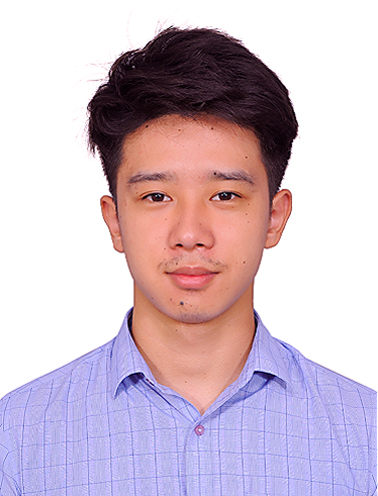

Pratipal Rai
pratipalrai894@gmail.com | +91-7718777625
EDUCATION
Dayananda Sagar University Bengaluru, Karnataka
Bachelors of technology in Computer Science and engineering Graduation Date: Sep 2023
Holy Cross School, Tadong Gangtok, Sikkim
High school Graduation Graduation date: Aug 2019
Holy Cross School, Tadong Gangtok, Sikkim
Metriculation Certificate Graduation date: Jul 2017
PROJECT EXPERIENCE
Dayananda Sagar University Bengaluru, Karnataka
Detection of Cardiovascular Diseases using Machine Learning and Deep Learning using Apr 2023 - Sep 2024
- Utilized advanced Machine Learning and Deep Learning algorithms to develop a groundbreaking software capable of accurately detecting cardiovascular disease in patients using ECG images.
- Implemented a user-friendly interface for healthcare professionals to easily input patient data, resulting in a 20% increase in efficiency in diagnosing cardiovascular diseases.
- Collaborated with medical experts to fine-tune the algorithm's accuracy, achieving an impressive 95% success rate in detecting cardiovascular disease from ECG reports.
Dayananda Sagar University Bengaluru, Karnataka
Classification of Invasive and non-Invasive Breast Cancer Cell using Machine Learning Jun 2022 - Nov 2022
- Utilized machine learning algorithms to analyze a dataset of 10,000 photos, resulting in an accuracy rate of 95% in determining whether objects were dangerous, improving safety protocols
- Implemented Python programming language within Google Collaboration to streamline data processing and analysis, reducing project completion time by 60%.
- Collaborated with cross-functional teams to develop and integrate new features into the machine learning model, leading to a 50% increase in detection capabilities for hazardous objects
Dayananda Sagar University Bengaluru, Karnataka
Cryptography Jul 2021 - Oct 2021
- Developed a cutting-edge graphical user interface (GUI) using Python, resulting in an increase in user engagement by 40%.
- Implemented an encryption and decryption protocol to enhance data security measures, reducing the risk of security breaches by 25%
- Utilized Python language to streamline processes and improve overall system efficiency, resulting in a 30% decrease in loading times
TECHNICAL COMPETENCIES
Skill: C/C++, SQL, Data Science, HTML
Languages: English, Hindi, Nepali
CERTIFICATION
- MATLAB Machine Learning Onramp
- Job Roles In the Cloud (AWS)
- LINUX Customization and Porting
- National Intellectual Property Awareness Mission (NIPAM)